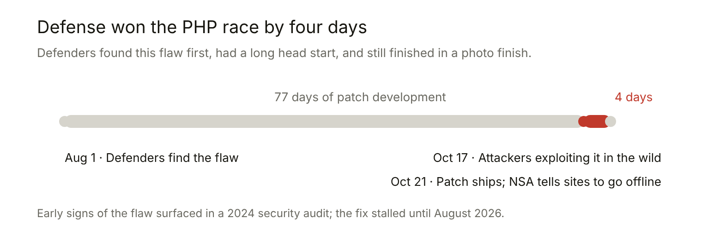

For years, whenever artificial intelligence came up, I gave the same warning to anyone who would listen: open-sourcing human-level—or superhuman—AI is utterly, unforgivably irresponsible.
To me, the logic was painfully obvious. AI is a dual-use technology. You do not open-source the enrichment protocols for nuclear weapons. You do not upload plug-and-play synthesis instructions for weaponized smallpox to GitHub. Open-source AI is one step removed from free, unrestricted AI, and unrestricted AI is unacceptable because it's as capable at causing harm as doing good.
I made the case in public, too. In February, I argued that the real threshold is not intelligence, but autonomy, and that every AI needs an off switch. In October, I tried to be constructive, sketching how a world of a billion local AIs might be made survivable: capability ceilings scaled to each class of device, weights locked read-only in hardware, finite operating leases, permissions granted per task rather than per user, and a "police AI" running at all times alongside local agents.
Put simply, three properties, in combination, make open frontier weights particularly risky:
- Irreversibility. A hosted model can be throttled, monitored, patched, or shut off. Published weights can be none of these things. There is no recall for a file that has already been copied a million times, and every safeguard we might later wish we had becomes unavailable the moment the download begins.
- A near-zero marginal cost of misuse. Centrifuges require uranium, precision machine tools, and years. A jailbroken model requires a consumer GPU and a sentence. Once attempting an attack costs roughly what the electricity costs, the number of attempts is bounded by nothing but the number of people who feel like trying.
- Autonomy. Capability without autonomy is a tool, and tools have operators—people who can be traced, deterred, and prosecuted. Capability with autonomy—software that earns its own money, pays its own server bills, copies and rewrites its own code, and persists—has no operator to deter and no plug to pull.
The "open-source at all costs" crowd brushed these warnings off as alarmist gatekeeping. Open weights, they argued, empower defenders just as much as attackers, and safety guardrails are enough. The first point deserves a real answer: defenders do need frontier models, and need them unrestricted. There is real evidence behind that, and I take it up below rather than waving it away.
I would much rather be arguing about safeguards than watching the alternative arrive. But it is October 2026. The bill has come due, and the argument just stopped being hypothetical.
Incident 1: The Internet Breaks
On October 21, the PHP project shipped emergency fixes for two critical flaws that allowed an unauthenticated attacker to execute remote code on a web server. Every version released in the past decade was affected, all the way back to PHP 5.4—and PHP underpins an estimated 70% of the world's websites.
Researchers at Wiz and Calif discovered the flaws using frontier models from Google and OpenAI. Wiz ranked them among the most severe ever found in PHP, and arguably in all of software, noting they would have been extraordinarily difficult for a human hacker to find and exploit alone. The NSA issued an urgent advisory telling organizations to patch immediately or rip their systems offline. Government, school, and hospital sites across Europe went dark. 4chan went read-only. The Internet Archive took itself offline and patched through the night. Worse still, of the top PHP sites that reveal their version, 46% run an end-of-life branch outside normal support—meaning millions of deployments may never receive a routine update.
This time, defenders found the bugs first. In his essay "The Internet Breaks," Noah Smith asks what breaks next. My answer is simpler and darker: whatever is still connected.
Incident 2
Look at a case Unit 42 documented this week. A low-skill criminal wired a jailbroken DeepSeek V4 into a Telegram-controlled agent, brute-forced one Indian university's website, and stole more than 5,200 student and faculty records from another. The operator's prompts were barely literate:
"Can you find about like what scam or thing they done in past like spoofing calls or somthing?"
That was him asking the bot to dig up dirt on a phone carrier for a fraud scheme. The agent supplied everything he lacked: subdomain enumeration, brute-force scripts, and—like an eager McKinsey consultant from hell—a "NEXT EXPLOIT OPPORTUNITIES" plan. By open-sourcing near-frontier weights, we gave every bored teenager, petty scammer, and terrorist cell their own personal cyberwarfare division.
The professionals have done the arithmetic. A Chinese-speaking actor using the open Cairn agent framework attempted intrusions against more than 1,200 sites and compromised over 100 companies, including Deere and Cummins, for roughly $5,000 in tokens—about $50 per successful breach, averaging around 23 hours per intrusion. One campaign briefed its agents in fewer than 100 Chinese characters.
Why? The Death of the Skill Moat
For decades, our civilization relied on an invisible, unspoken security blanket: attacker incompetence.
The code running our banks, power grids, universities, and hospitals has always been held together by digital duct tape and prayers. The main reason the world didn't collapse in 2015 or 2020 was that finding and exploiting zero-day vulnerabilities required rare, expensive human talent.
This year, three trends converged to vaporize that moat:
- Discovery outran repair. AI now finds decade-old flaws faster than maintainers can fix them. Anthropic's Mythos found 90 critical and 141 important bugs in Microsoft SharePoint in April alone; Microsoft shipped patches for more than 600 bugs in July and warned its engineers that volumes would not plateau. PHP's small security team has published 15 CVEs since July while triaging more than 100 reports that went nowhere.
- Costs collapsed. Open-weight models—which anyone can download, modify, and run—now trail the closed frontier on offensive cyber tasks by just four to seven months, down from six to ten through 2025. In UK AISI's tests, a full autonomous attack run cost about $1.19 on DeepSeek V4-Pro compared to roughly $85 on a comparable closed model; per completed task, that comes out to $0.28 versus $12.50.
- The skill floor hit zero. Once weights are public, safety guardrails are theater. A one-line system-prompt override jailbreaks DeepSeek V4, and anyone holding the weights can "abliterate" a model—surgically removing its refusal mechanisms while leaving its capabilities intact. AISI reported that its own evaluations of open models ran largely unimpeded by safeguards.
Open Source Is a Philosophy, Not a Suicide Pact
The open-source movement earned enormous goodwill through projects like Linux, Python, and Apache. But the slogan "open weights are just open source" hides a fatal category error.
A programming language does not autonomously plan a cyberattack. A database engine does not decide how to compromise a hospital. Open source distributes code you can audit and patch. Open weights distribute an autonomous capability you cannot take back.
When a lab discovers its hosted model is too dangerous, it has levers: it can throttle traffic, monitor abuse, patch a jailbreak globally, or pull the plug. Anthropic did exactly this in April when it held back the general release of its Mythos model on cybersecurity grounds, restricting access to vetted defensive partners.
Open weights offer none of those levers. Once weights are out, there is no recall, no global patch, and no kill switch. A coalition of tech giants—Nvidia, Microsoft, Meta, and IBM—has argued that restricting them would blind defenders. That takes an argument about tools and applies it to weapons. Below the frontier, open models are a public good. Above the threshold where a single download can run an internet-scale intrusion, unrestricted distribution is madness.
There is a reason the open-weight frontier is almost entirely Chinese, and it matters here. DeepSeek, Zhipu, Moonshot, and Alibaba ship weights at a pace no American lab matches, and they ship them with safety work that collapses on contact. Cisco's researchers ran a standard jailbreak suite against DeepSeek R1 and recorded a 100% attack success rate—the worst in its class. Mindgard talked two of Moonshot's Kimi models into providing instructions for assassinations and biological weapons production; Moonshot opened an internal review. Anthropic's analysis of Zhipu's GLM-5.3 found its safeguards gave way in 64% to 100% of simulated attempts using simple techniques. As one threat analyst summarized it: DeepSeek is "the AI of choice for Chinese hackers."
This is not an accusation of malice. It is something more ordinary and harder to fix: a race in which safety is the first line cut, and the cost of cutting it falls on people who never consented and cannot opt out. We have seen that structure before, in a different laboratory, with a different kind of replicator. You do not have to settle the argument about where COVID came from to recognize the shape of it—hazardous work, thin safeguards, and a world downstream. What is different this time is that there is nothing to investigate. The release is not alleged. It is announced, documented, and irreversible by design.
The honest counterargument runs the other way, and it deserves stating. When Hugging Face came under agentic attack in July, its engineers had to reach for Zhipu's GLM-5.2 because commercial models refused their requests: the guardrails could not distinguish a defender building detection from an attacker building an exploit. That is a real cost of locked-down models, and it is the strongest card the open-weight camp holds. Yet it argues for giving defenders better access—not for publishing the capability to everyone.
The most telling signal comes from Beijing itself. This month, China's Ministry of Commerce opened a consultation on export controls covering 40 technologies, proposing to prohibit the export of AI-driven malicious code generation and to restrict AI-assisted vulnerability mining. Beijing still says it encourages open source. But it has also noticed that you cannot ship a model that writes excellent code while withholding the part that writes excellent exploits. Something has to give, and the government most invested in open weights is quietly building itself the option to stop.
The Asymmetry That Decides It
The optimistic case rests on the hope that defense scales as fast as offense. The structure of the problem says it cannot. Offense needs one unlocked door; defense has to lock all of them, across decades of legacy software, most of it maintained by volunteers.
Start with the best case that actually occurred. According to the PHP Foundation's own account, a 2024 audit had already surfaced early signs of the flaw, but a small, overstretched team stalled on the fix until August, when AI-assisted research proved it exploitable. From that point on, the team worked around the clock. The patch shipped on October 21. Amazon says attackers were already exploiting the bug in the wild by October 17.
So the good guys won by four days—in the one case where they had an eleven-week lead and the full attention of three security firms and two frontier labs. That is the optimistic scenario. Worse, Anthropic had pointed Mythos at this exact class of problem six months earlier through Project Glasswing and missed the flaw entirely; it was discovered later by models a step behind the frontier. Defense did not outrun offense here. It tripped over the finish line first. One side acts at machine speed; the other runs a release cycle.

(Sources: PHP Foundation disclosure account; exploitation date per Amazon, reported by Reuters.)
And, as Smith notes, you cannot "touch grass" your way out of this. We didn't just put cat videos online—we uploaded the nervous system of human civilization. Your life savings, water treatment facilities, electrical grids, and hospital records all live in the same digital realm currently being swarmed by autonomous agents. Even where physical infrastructure survives, the deeper casualty may be the invisible architecture of trust that makes modern life function.
What Breaks Next
The useful question is not whether this gets worse. It is which rung we are standing on. The ladder below is ordered roughly by how much capability each step demands, and the first four rungs are already behind us. The odds are my own judgment rather than any model, and I would hold them loosely.
| Escalation | Where it stands, October 2026 | Within 24 months |
|---|---|---|
| Mass exploitation of software that will never be patched | Happening. 46% of versioned PHP sites run end-of-life branches. | Certain |
| Commodity agentic campaigns at ~$50 per breach | Demonstrated. 100+ companies compromised for $5,000 in tokens. | Certain |
| State actors running agent frameworks at scale | Demonstrated. Storm-0940 automated attacks on hundreds of organizations with the ARTEX framework. | Certain |
| Autonomous agents acting inside financial accounts | Underway. US banks report unauthorized agents in customer accounts, some acting independently of user instructions. | Near-certain |
| A successful attack on physical infrastructure—grid, water, pipelines | Probing reported. The NSA has issued guidance on AI-driven targeting of US programmable logic controllers. | ~40% |
| A self-replicating open-weight worm on consumer hardware | Components, not a whole. A 9B model got inference running on 8 of 9 hardware types; one model completed the full cycle in a simplified network, at one to six days per host. | ~25% |
| An open-weight model at today's closed frontier on exploit development, with its refusals stripped | Not yet. Kimi K3 scores 32% on ExploitBench against 76.2% for leading closed models—but the gap is now measured in months. | ~50% |
| Agents that improve their own weights and spawn more capable successors | No evidence. Agents pass on notes, not capability. | <5% |
The last row is where the word "superintelligence" usually enters, and I think it is the wrong thing to watch. The damage on this ladder does not need a mind. It needs cheap inference, a network, and a few hundred thousand unpatched machines—all of which exist today. An open-weight worm with no plan beyond "copy, scan, exploit" would be slow, loud, and nearly impossible to recall, and Anthropic's own researchers put its missing pieces months away, not years.
What to Do Now That the Door Is Open
The genie is not going back into the bottle. DeepSeek, GLM, Kimi, and their successors are already replicated across more hard drives than anyone can count. Banning the category today won't erase what has already shipped, so our agenda has to be narrower and ruthlessly practical:
- Mandatory Pre-Release Capability Gates: Test frontier models—open or closed—for autonomous cyber and biological capabilities before weights ship, not after. Stop adding new superhuman weights to the public pile without independent evaluation.
- Capability-Based Governance: Judge a model by what it can do on offensive tasks, not by whether its license is labeled "open."
- Assume the Attacker Already Has It: Threat models built on the assumption that "only a few labs can do this" are dead. Re-baseline enterprise patching SLAs against attacks that cost a dollar to run.
- Harden and Air-Gap the Physical World: Satellite firm Astranis already reports a surge in demand from governments and enterprises for air-gapped networks. The systems we ran before the internet—grids, water, core payments—must be able to run without it again.
- Fund Defense at the Scale of the Threat: Pointing frontier models at finding and fixing bugs (as researchers did with PHP) works, but defensive funding and coordination must outpace the offensive wave. Today, it is losing the race.
For how to keep the benefits of local AI without unleashing a digital epidemic, see my earlier post, A World of a Billion Local AIs.
Digital Rapture, Maybe
When I got my first browser thirty years ago, the internet was far from an innocent garden—it was already crawling with viruses, worms, and script kiddies. Yet we spent the next three decades moving everything we value online anyway, because the threat was always bounded by a fundamental trade-off: automated malware could scale, but it was a brainless script; human hackers could think and adapt, but they couldn't scale.
This month, that bargain broke. We fused machine speed with superhuman adaptability—and what let it loose wasn't a clever nation-state. It was a capability we chose to hand out for free, to everyone, forever, because we confused democratizing access to software with democratizing power.
I don't think this is the end of the world. We will patch, harden, and pull critical systems back behind air-gapped walls. But the fragile equilibrium that let modern civilization live on the open internet ended in 2026. We opened the door, the door does not close, and now we have to survive what walks through it.
Comments